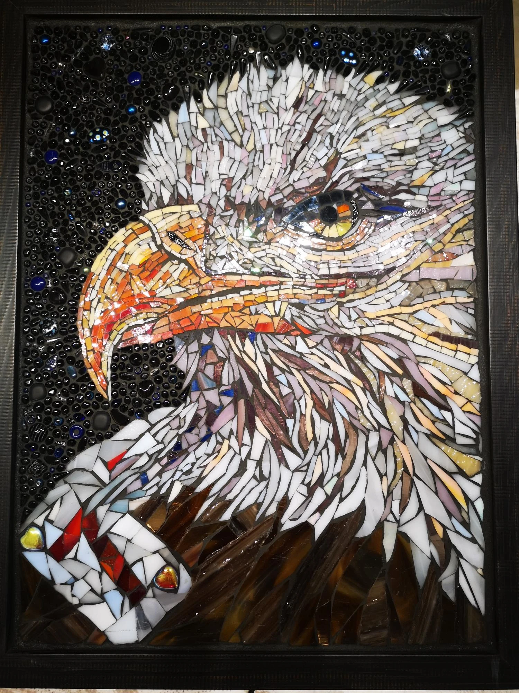

Umělecká mozaika
Ručně tvořené obrazy a dekorace s využitím tradičních postupů italského mistra Giulia Menossiho. Originální umění, které do vašeho interiéru vnese dotek mistrovského řemesla.
O mně
Jsem Martina Josífek Zelinková, brusička skla a mozaikářka z Jizerských hor. Ve své tvorbě propojuji Tiffany techniku, mikromozaiku i tradiční skleněné korálky s drahými kameny a recyklovanou keramikou.
Zkušenosti od italského mistra Giulia Menossiho promítám do zakázkových děl i do obnovy výzdoby opuštěných kapliček, čímž s úctou k historii oživuji odkaz našich předků.
Každý dílek je ručně řezán a osazen
Sklo, přírodní kámen, keramika
Každé dílo je unikátní originál
Mozaiky na míru podle vašich přání
Galerie
Výběr z mých mozaikových děl – od dekorativních obrazů po funkční umělecké předměty. Každá mozaika je originál vytvořený s péčí o každý detail.
Jak vzniká mozaika
Každé dílo prochází pečlivým procesem, kde se řemeslo setkává s kreativitou.
Společně probereme vaše představy, rozměry, barevnost a umístění budoucí mozaiky.
Připravím grafický návrh mozaiky včetně výběru materiálů a barevných kombinací.
Ručně řežu, tvaruji a skládám jednotlivé dílky do finální podoby mozaiky.
Hotovou mozaiku pečlivě zabalím a předám – případně zajistím i instalaci.
Kontakt
Neváhejte mě kontaktovat s jakýmkoliv dotazem nebo poptávkou. Ráda vám poradím a společně najdeme ideální řešení pro váš prostor.
Popelnická 618, 46841 Tanvald - Šumburk nad Desnou
